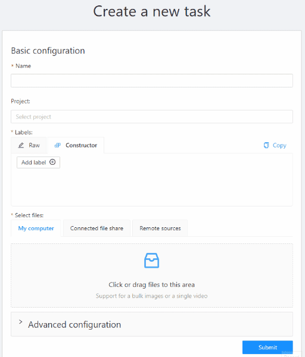
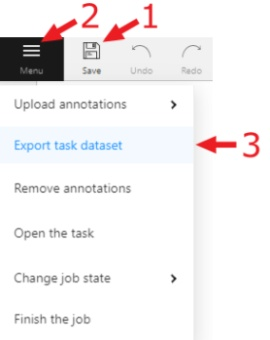

This section contains basic information and links to sections necessary for a quick start.
Installation
First step is to install CVAT on your system:
To learn how to create a superuser and log in to CVAT, go to the authorization section.
Getting started in CVAT
To create a task, go to Tasks section. Click Create new task to go to the task creation page.
Set the name of the future task.
Set the label using the constructor: first click Add label, then enter the name of the label and choose the color.

You need to upload images or videos for your future annotation. To do so, simply drag and drop the files.
To learn more, go to creating an annotation task
Annotation
Basic
When the task is created, you will see a corresponding message in the top right corner.
Click the Open task button to go to the task page.
Once on the task page, open a link to the job in the jobs list.
Choose a correct section for your type of the task and start annotation.
| Shape | Annotation | Interpolation |
|---|---|---|
| Rectangle | Shape mode (basics) | Track mode (basics) |
| Polygon | Annotation with polygons | Track mode with polygons |
| Polyline | Annotation with polylines | |
| Points | Points in shape mode | Liner interpolation with one point |
| Cuboids | Annotation with cuboids | Editing the cuboid |
| Tag | Annotation with tags |
Advanced
In CVAT there is the possibility of using automatic and semi-automatic annotation what gives you the opportunity to speed up the execution of the annotation:
- OpenCV tools - tools included in CVAT by default.
- AI tools - tools requiring installation.
- Automatic annotation - automatic annotation with using DL models.
Export dataset

-
To download the annotations, first you have to save all changes. Click the
Savebutton or pressCtrl+Sto save annotations quickly. -
After you saved the changes, click the
Menubutton. -
Then click the
Export datasetbutton. -
Lastly choose a format of the dataset. Exporting is available in formats from the list of supported formats.
To learn more, go to export/import datasets section.